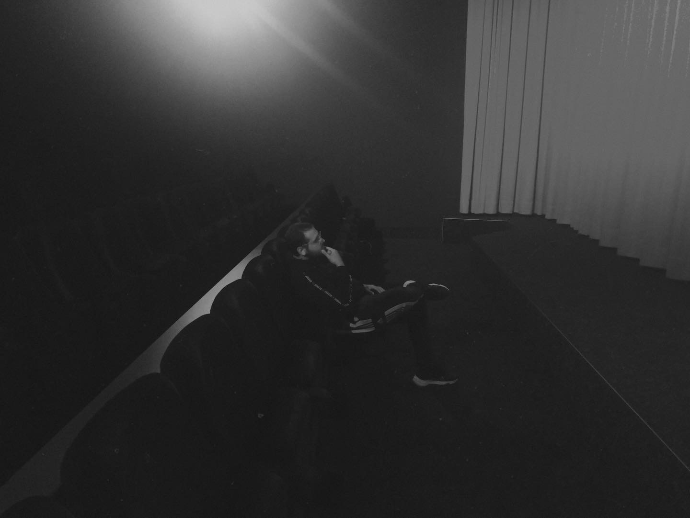
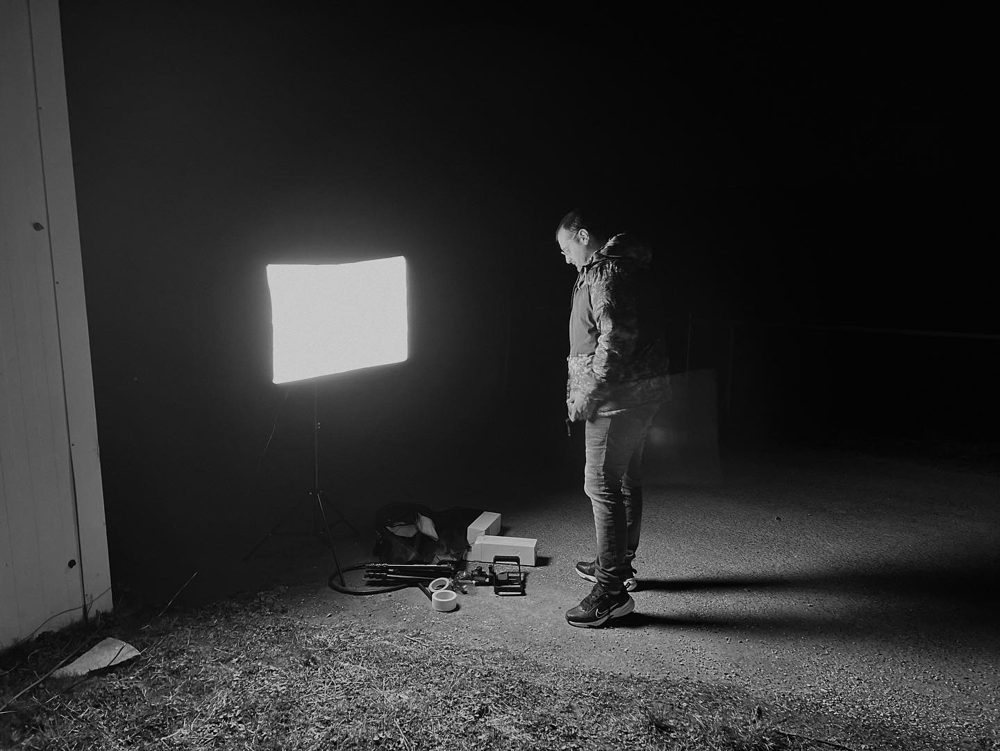

THE FILMMAKER
Made
independent.
Mein Name ist Kristijan Stojcevic, unter meinem Künstlernamen Chris Storm arbeite ich als Regisseur und Filmemacher.
Meine ersten eigenen Filme habe ich bereits im Alter von 16 Jahren gedreht. Gemeinsam mit meinen Cousins entstanden damals erste kleine Kurzfilme, unter anderem im Stil von Jackie-Chan-Filmen. Diese Projekte waren mein Einstieg in die praktische Filmproduktion.
Mit Anfang 20 begann ich, mich intensiver mit Filmproduktion, Filmsprache, Kameraarbeit, Schnitt und visueller Gestaltung auseinanderzusetzen. Viele meiner Projekte entstanden zunächst privat und dienten dazu, neue Techniken auszuprobieren, Fehler zu machen und daraus zu lernen.
Ich habe mir meine Kenntnisse und Fähigkeiten über die Jahre überwiegend selbstständig und autodidaktisch aufgebaut. Durch eigene Projekte, praktische Erfahrungen und die kontinuierliche Auseinandersetzung mit Filmproduktion habe ich mir Kenntnisse in unterschiedlichen Bereichen angeeignet.
Mein Anspruch ist es, eine Idee nicht nur zu entwickeln, sondern sie möglichst selbstständig von der ersten Idee bis zum fertigen Video umzusetzen.

ON SET / 2022
ON SET / 2022The
Films.
Kurzfilme, Experimente und unabhängiges Kino — alles an einem Ort.
STATEMENT
LIVES HERE.”
Kurzfilme, Experimente und unabhängiges Kino — alles an einem Ort.
CONTACT & BOOKING
Let's make
something.
Für Filmproduktionen, Regie, kreative Projekte, Kooperationen und Buchungen:
chrisstormfilms@gmail.com